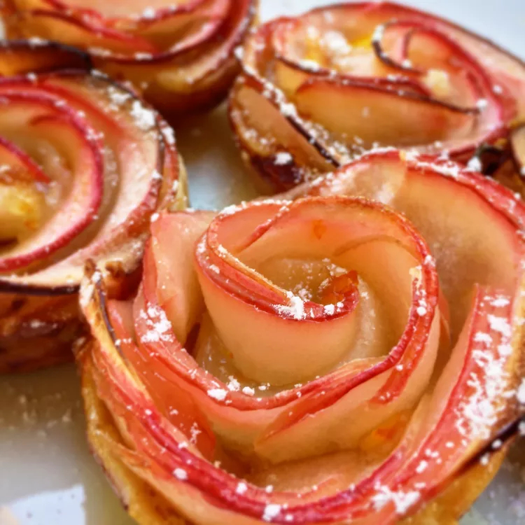

These apple roses were inspired by a cook named Ana, a Brazilian food blogger living in Italy. I hope you give
these gorgeous-looking and very delicious apple roses a try soon. Enjoy!
- 1 large red apple, cored and very thinly sliced
- ¼ cup white sugar
- 1 teaspoon ground cinnamon
- 1 sheet frozen puff pastry, thawed
- ¼ cup melted butter
- 1 large egg
- 2 teaspoons water
- 1 teaspoon confectioners' sugar (Optional)
- Preheat the oven to 400 degrees F (200 degrees C). Adjust an oven rack to the middle position. Butter two (6
to 8-ounce) ramekins and dust with white sugar.
- Place apple slices on a microwave-safe plate, overlapping slightly if necessary. Microwave on high until
slices slightly soften, about 45 seconds. Cover the plate with plastic wrap and a kitchen towel.
- Mix together sugar and cinnamon in a small bowl.
- Roll puff pastry sheet to less than 1/8-inch thickness. Using a pizza cutter, cut two (3x12-inch)
rectangles. Reserve remaining pieces for another use.
- Spread melted butter over dough; sprinkle with a generous amount of cinnamon sugar. Place apple slices along
one long edge of dough, about 1/4 inch beyond the edge, overlapping slices slightly. Fold the bottom half of
dough over apple slices to form a long "folder" of dough with rounded edges of apple slices exposed.
- Beat together egg and water in a small bowl. Brush surface of dough with egg wash. Sprinkle with cinnamon
sugar.
- Starting at one end, roll dough to form a rose-shaped pastry. Seal roll with end of dough strip. Transfer
roses to the prepared ramekins. Sprinkle with cinnamon sugar.
- Bake on the middle rack in the preheated oven until well browned, about 45 minutes. Use tongs to remove the
ramekins to a baking sheet to cool for 5 to 10 minutes. Remove apple roses from the ramekins and finish
cooling on a wire rack. Dust with confectioners' sugar before serving.